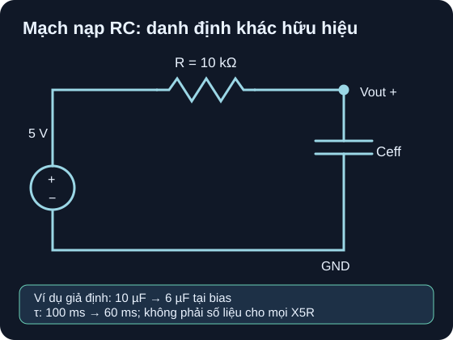

Tụ Điện Trong Mạch Thực
Điện dung hữu hiệu, ESR, rò và ripple làm mạch thực khác mô hình RC danh định.
- Tính
Ceffvàτ=RCeffkhi biết tỷ lệ C dưới DC bias, nêu tỷ lệ đó là dữ liệu bài toán hay dữ liệu của đúng part. - Lập bảng nạp RC và giải thích vì sao đường C–V thực khiến mô hình C cố định chỉ là xấp xỉ.
- Phân biệt ESR nối tiếp, dòng rò song song, dòng ripple, ESL và giảm định mức theo nhiệt; chỉ ra điều kiện thử của ít nhất một trị số trong datasheet.
- Phân loại “typical/đồ thị tham khảo” và “giới hạn bảo đảm” trước khi ra quyết định chọn part.

Đọc mô tả A04-1
Nguồn lý tưởng tạo bước 0 lên 5 V so với GND. R 10 kΩ từ cực dương nguồn tới nút Vout. Tụ nối từ Vout xuống GND. Với C cố định 10 µF, τ=100 ms; nếu giả định Ceff cố định 6 µF, τ=60 ms. Đây là so sánh mô hình, chưa phải phép đo hay đặc tính của mã tụ bất kỳ.
1. Điện dung trên nhãn và điện dung ở điểm làm việc
Murata, FAQ “Does the capacitance change when a DC voltage is applied?” cho biết MLCC Class 2 như X5R/X7R có thể giảm C khi đặt DC bias; C0G không có đặc tính DC-bias tương tự. Mức giảm phụ thuộc mã, điện áp, nhiệt độ và điều kiện đo. Một biểu đồ ví dụ của hãng không cấp hệ số chung cho mọi X5R.
Ví dụ một ứng viên có thật là Murata GRM188R61A106MAAL. Trang sản phẩm Murata, bảng thông số ghi 10 µF ±20%, 10 VDC, X5R, kích thước 1608M/0603; danh mục dynamic model Murata bản 2025-04 cũng ghi các cột này. 10 V là giới hạn điện áp danh định, không bảo đảm C vẫn bằng 10 µF tại 5 V. Muốn tính Ceff của mã này, mở SimSurfing từ trang part, cố định nhiệt độ, tần số và AC test level rồi xuất đường C–V. Chưa có đường dữ liệu được chép vào bài, nên không gán tỷ lệ 60% dưới đây cho part Murata đó.
“10 µF ±20%” là thông số theo điều kiện đo của part. Đường C–V trong công cụ thiết kế thường là dữ liệu đặc tính/typical dưới điều kiện đã chọn; không thay thế kiểm dung sai, nhiệt và giới hạn bảo đảm cho cả sản xuất. Murata, FAQ về điều kiện để đo được C danh định nêu vai trò của nhiệt, AC/DC test, tần số và tuổi tụ.
2. Ví dụ giải từng bước: sai khác hằng số thời gian
Dữ kiện giả định của bài toán, không phải Murata GRM188R61A106MAAL: một tụ ghi 10 µF, tại mức bias xét còn 60% C danh định; R lý tưởng 10 kΩ, nguồn bước lý tưởng 0→5 V, Vout trên tụ, GND làm mốc. Bỏ qua dung sai, ESR, rò, ESL và việc C thay đổi liên tục trong quá trình nạp.
- Đổi đơn vị:
10 µF = 10×10⁻⁶ F;10 kΩ = 10 000 Ω. - Điện dung hữu hiệu:
Ceff=0,60×10=6 µF. - So τ:
τnom=10 000×10×10⁻⁶=0,100 s=100 ms;τeff=10 000×6×10⁻⁶=0,060 s=60 ms. Mô hình hữu hiệu nạp nhanh hơn. - So điện áp ở t=60 ms: theo C danh định
v=5(1−e⁻⁰·⁶)≈2,256 V; theo Ceffv=5(1−e⁻¹)≈3,161 V. Sai khác khoảng0,905 Vtrong hai mô hình cố định.
| t (ms) | v, C=10 µF (V) | v, Ceff=6 µF (V) | Công thức bảng tính cho 6 µF |
|---|---|---|---|
| 0 | 0,000 | 0,000 | =5*(1-EXP(-0/60)) |
| 60 | 2,256 | 3,161 | =5*(1-EXP(-60/60)) |
| 100 | 3,161 | 4,056 | =5*(1-EXP(-100/60)) |
| 200 | 4,323 | 4,822 | =5*(1-EXP(-200/60)) |
Giới hạn quan trọng: C của MLCC Class 2 thường là hàm của điện áp tức thời. Trong một bước nạp 0→5 V, dùng một Ceff lấy tại 5 V cho toàn bộ đường nạp không cho nghiệm chính xác; đây là hai đường xấp xỉ so sánh. Muốn dự báo đường thực, cần model C(V) phù hợp, điều kiện ban đầu và mô phỏng hay đo có bằng chứng. Murata, FAQ DC-bias.
3. Vì sao ESR, rò và ripple làm hỏng quyết định chỉ theo C
Trong mô hình tương đương, ESR nối tiếp với C và làm rơi áp/tỏa nhiệt khi có dòng; dòng rò tương đương một đường dẫn song song, ảnh hưởng thời gian giữ điện sau nạp; ESL nối tiếp quan trọng khi xung nhanh. Dòng ripple là dòng AC hiệu dụng qua tụ trong điều kiện tần số và nhiệt cụ thể. Datasheet điện phân Nichicon trình bày dòng rò, ESR/impedance, khả năng ripple và giới hạn nhiệt; bảng polymer của hãng còn ghi ESR tại 20 °C, 100 kHz, nên không bê giá trị đó sang DC hoặc tần số khác. Nichicon, General Descriptions, mục Characteristic/Applications; Nichicon FPCAP, bảng ESR/ripple.
| Thông số | Ảnh hưởng trong mạch | Cần chép cùng điều kiện nào? |
|---|---|---|
| DC bias / Ceff | Đổi τ, dự trữ điện tích và đáp ứng lọc. | Mã part, VDC, nhiệt, tần số/biên độ đo; typical hay giới hạn. |
| ESR | Sụt áp tức thời và tổn hao gần đúng I²rms·ESR khi model phù hợp. | Tần số, nhiệt độ, mức điện áp, bảng/đồ thị của đúng part. |
| Dòng rò | Làm tụ tự xả và tăng dòng chờ. | Điện áp đặt, thời gian sau nạp, nhiệt, giới hạn max hay typical. |
| Ripple | Tự nung nóng; không lấy từ định mức dòng DC của dây mạch. | Arms, tần số và hệ số chuyển tần số, nhiệt, tuổi thọ. |
| ESL / layout | Giảm hiệu quả ở tần số cao; dây dài thêm cảm ký sinh. | Package, đường hồi dòng và cấu hình đo. |
“Derating” ở đây là kiểm cả điện áp cực đại kể cả quá độ, nhiệt môi trường cộng tự nung nóng, dòng ripple và tuổi thọ theo bảng/đường cong của part. Không áp một quy tắc cố định như “luôn chọn 1,5 lần điện áp” cho mọi công nghệ. Nếu datasheet chỉ có đường typical thì cần margin và xác nhận với nhà sản xuất hoặc phép đo phù hợp, không tự biến đường typical thành giới hạn bảo đảm.
4. Hoạt động tái lập: đọc đường C–V và dựng hai đường RC
Trên trang GRM188R61A106MAAL, ghi mã part đầy đủ, 10 µF ±20%, 10 VDC và X5R. Mở SimSurfing từ trang hãng; chọn đúng mã, nhiệt độ 25 °C, mức AC test và tần số được hiển thị, rồi xuất CSV hoặc ảnh đường “DC bias characteristics”. Ghi ngày truy cập/version. Nếu công cụ không tải được, đánh dấu “chưa lấy được C–V”; không thay bằng đường của part khác.
Chép các cặp
(VDC, Ceff)tại 0, 2,5 và 5 V từ đường part, ghi phương pháp nội suy và sai số đọc đồ thị. DùngR=10 kΩđể tínhτ(V)=R·Ceff(V). Kết quả kỳ vọng có đơn vị ms; xu hướng Class 2 thường là C giảm khi bias tăng, nhưng không có giá trị số kỳ vọng cho part này khi chưa lưu CSV.Riêng để tự kiểm phép tính, dùng dữ liệu giả định C cố định 10 và 6 µF, nguồn 5 V. Trong bảng tính đặt cột
t=0,60,100,200 ms, dùng=5*(1-EXP(-t_ms/tau_ms))vớitau_ms=100hoặc60. Bảng ở mục 2 là kết quả kỳ vọng có thể đối chiếu từng hàng.Vẽ hai đường v(t), ghi nhãn “mô hình C cố định”. Nếu muốn mô phỏng đường C(V), cần model phi tuyến có nguồn và phiên bản simulator, lưu netlist, thiết lập, waveform; không gọi hoạt động giấy này là đã chạy mô phỏng.
Chưa có BOM, board, part revision, nguồn giới hạn dòng, kiểm cực tính và người duyệt nên chỉ làm giấy/bảng tính. Nếu thay MLCC bằng tụ điện phân để thử thật, cực + phải ở Vout và cực − ở GND; kiểm áp đảo cực khi chuyển mạch, xả tụ qua đường được thiết kế và giới hạn dòng trước khi đo. Đo ripple bằng oscilloscope cần quy trình nối mass an toàn và thiết bị phù hợp.
Tụ danh định 4,7 µF trong bài toán giả định còn 70% C tại điểm bias, mắc với R=2 kΩ. Tính Ceff và τ; tính điện áp trên tụ tại t=τ nếu nguồn bước là 3,3 V và dùng mô hình C cố định. Một người đề nghị dùng một X5R bất kỳ 4,7 µF/6,3 V trong mạch 5 V vì “5 < 6,3”; nhận xét.
- Mô hình, 1 điểm: vẽ R từ nguồn tới nút Vout, tụ từ Vout về GND; 70% là giả định bài toán, không là số liệu của một X5R bất kỳ.
- Đơn vị/công thức, 1 điểm:
Ceff=0,70×4,7 µF;R=2000 Ω,τ=RCeff. - Kết quả, 1 điểm:
Ceff=3,29 µF;τ=2000×3,29×10⁻⁶=0,00658 s=6,58 ms. Tại t=τ,v=3,3(1−e⁻¹)≈2,086 Vvới mô hình cố định. - Giới hạn và chọn part, 1 điểm: mức 6,3 V chỉ qua cổng điện áp danh định nếu không có quá độ vượt mức, chưa chứng minh Ceff ở 5 V, nhiệt, dung sai, ESR/ripple hay độ tin cậy. Cần đường C–V và dữ liệu đúng mã, điều kiện thử cùng biên thiết kế; nếu waveform lên/xuống mạnh, kiểm áp tức thời và model phi tuyến.